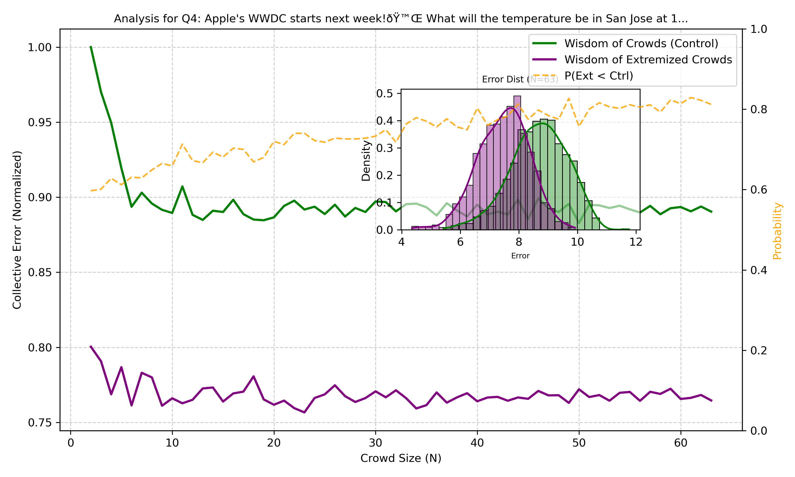
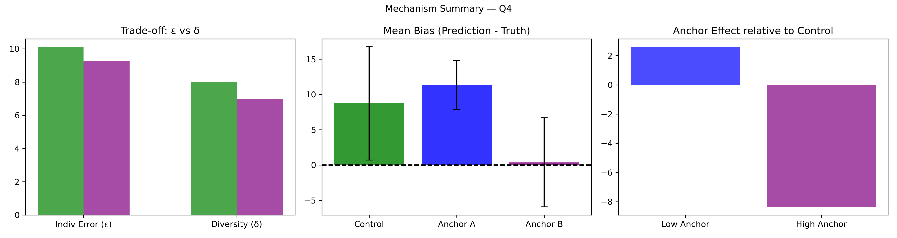
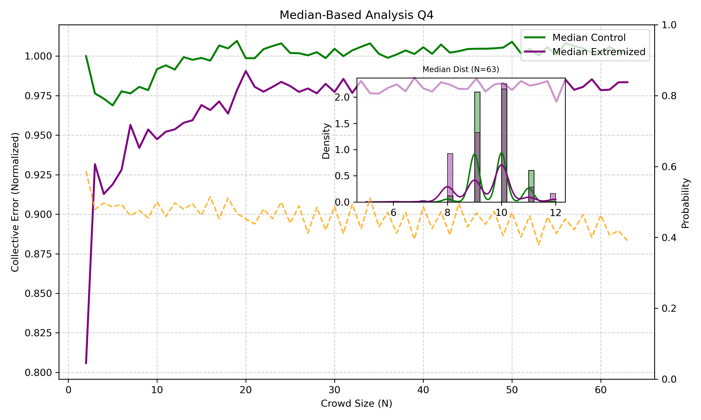

Question Q04
Truth = 66.0
Show/Hide Super Summary
================================================================================ QUESTION Q04: 01_Pilot_stats_ff6ClfwxCi.csv Apple's WWDC starts next week!🙌 What will the temperature be in San Jose at 10 PST on Monday? Truth = 66.0 N_ctrl = 157 N_ext = 63 ================================================================================ [1] MEAN-BASED COLLECTIVE ERROR Ec=8.6816 ± 0.9679, CI=[6.6020,10.3813] Ex=7.4781 ± 0.8717, CI=[5.7294,9.0798] Percent Change = -13.86% Bootstrap P(Ext<Ctrl) = 0.8180 t-test(E): t=29.217, p=0.000000 (SIGNIFICANT (p < .05)) [2] MEAN INDIVIDUAL ERROR (ε) ε_ctrl=10.1210, ε_ext=9.3016 Percent Change = -8.10% Welch t-test p = 0.2668 [3] MEAN DIVERSITY (δ) δ_ctrl=8.0094, δ_ext=6.9940 Percent Change = -12.68% Levene p = 0.2804 [4] ANCHOR DIAGNOSTICS Anchors: A=79.0, B=57.0 Effective: A=False, B=True [5] EQUATION 6 CHECK w_L=0.4716, w_H=0.6068, Δ=32.3437 Criterion_L=None, Criterion_H=None Meets both = True [6] MEAN δ–ε–E SCENARIO Scenario: δ:down, ε:down, E:down Mechanism Explanation: Calibration: forecasts shift inward toward truth (66.0), reducing diversity and individual error. ================================================================================ INTERPRETATION — MEAN AGGREGATION ================================================================================ Mean-based collective error changed by -13.86% relative to the true value 66.0. Scenario=δ:down, ε:down, E:down. Equation 6 feasibility=True. ================================================================================
Mean-Based Plot
Mean Mechanism Plot
Median-Based Plot
Median Mechanism Plot